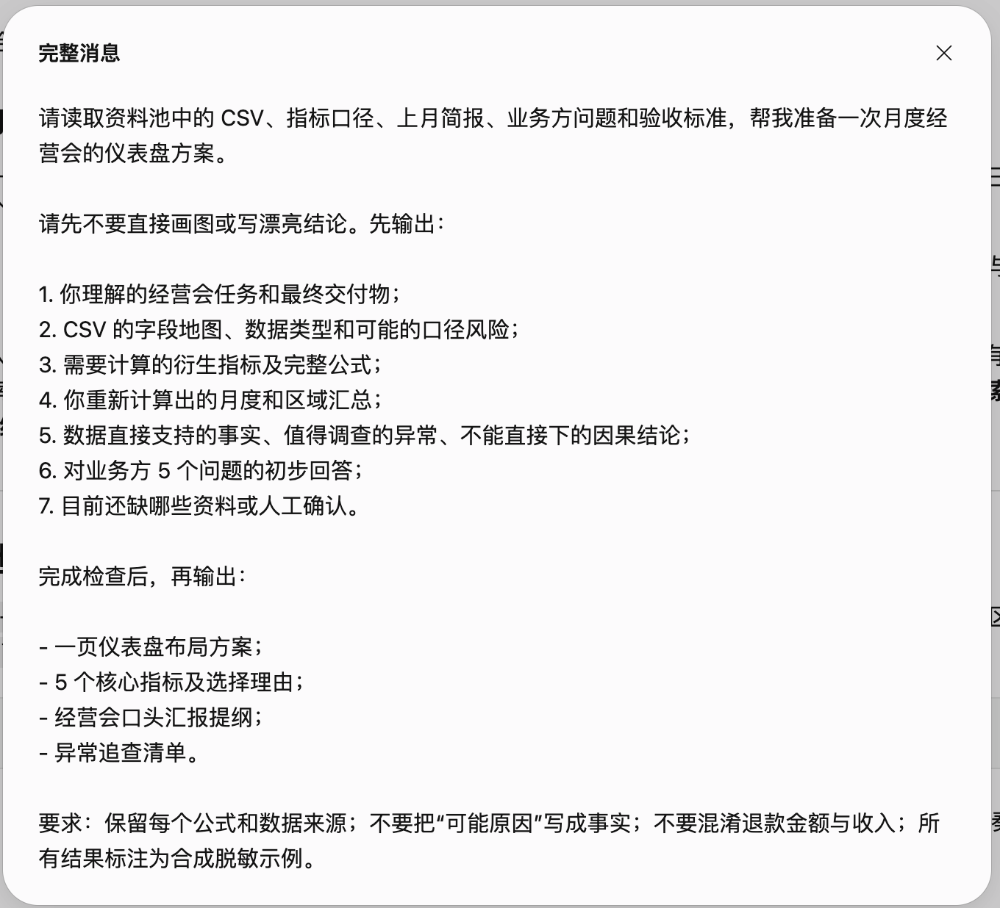
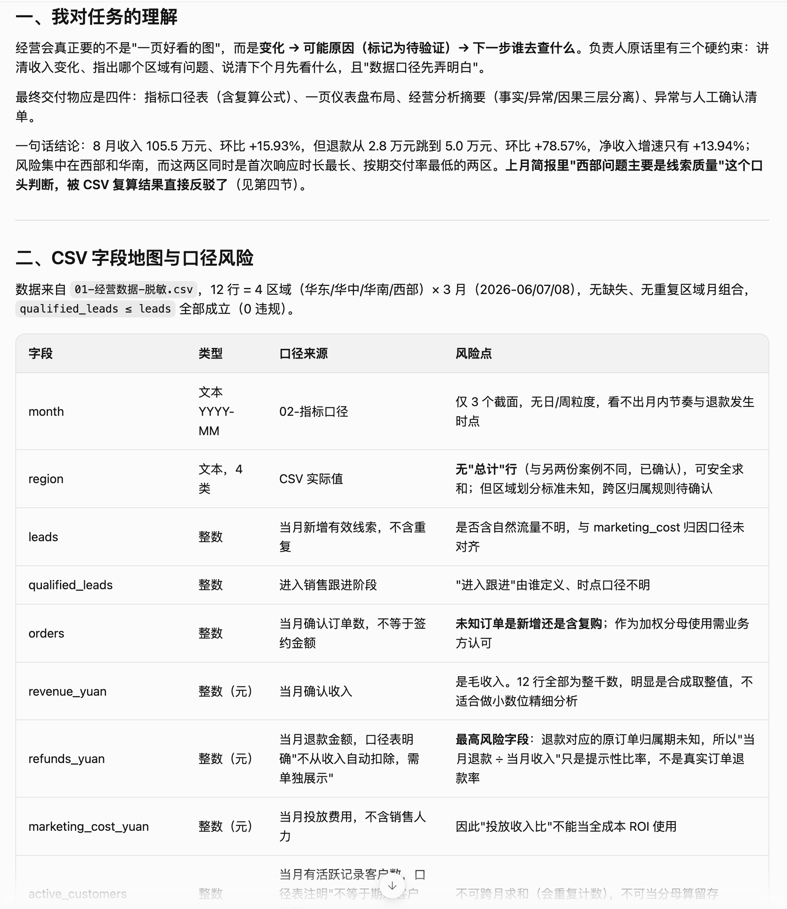
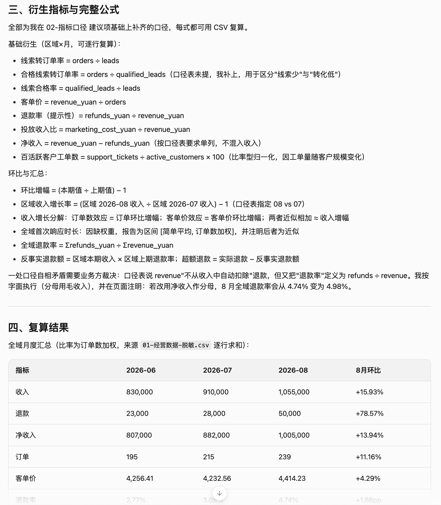
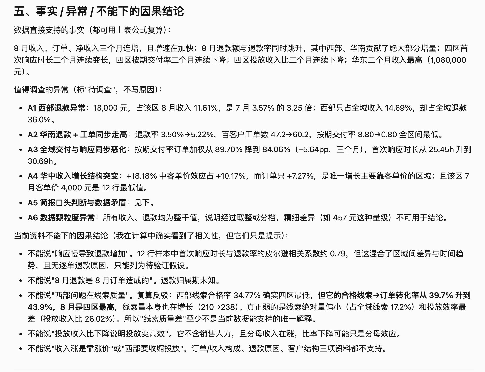
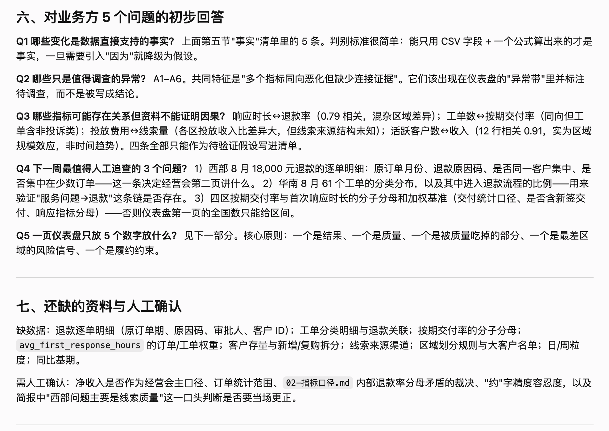
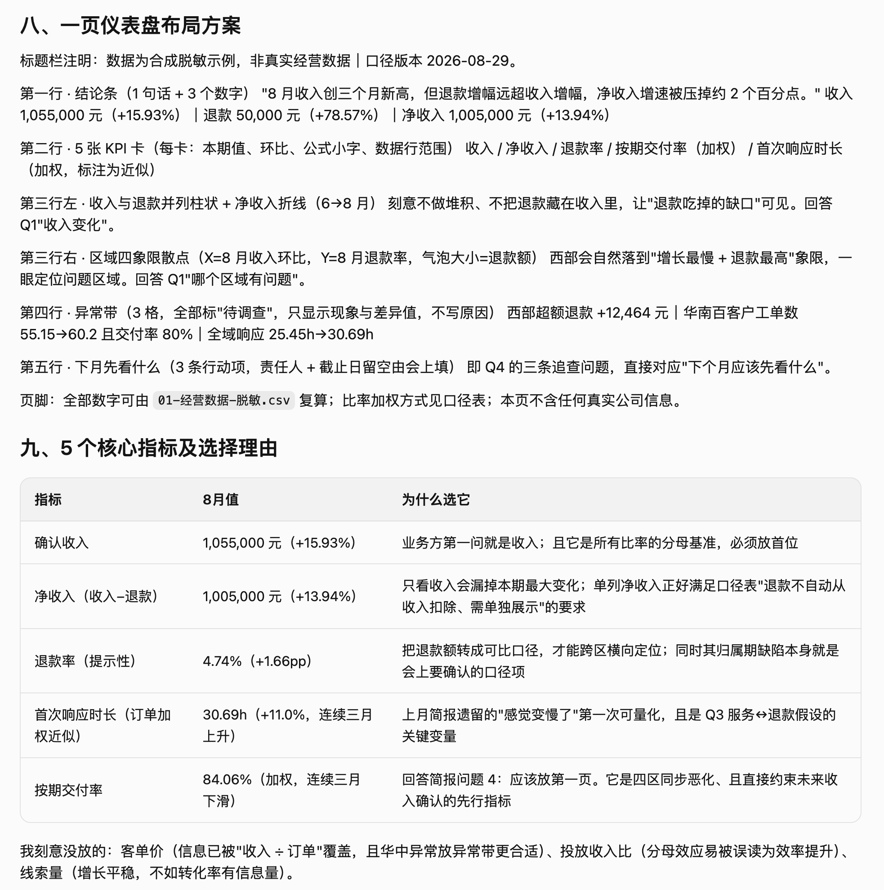
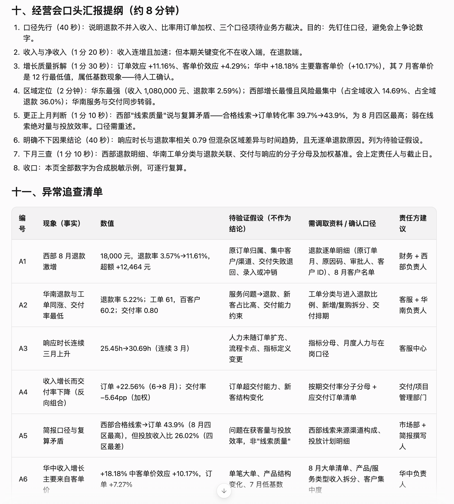
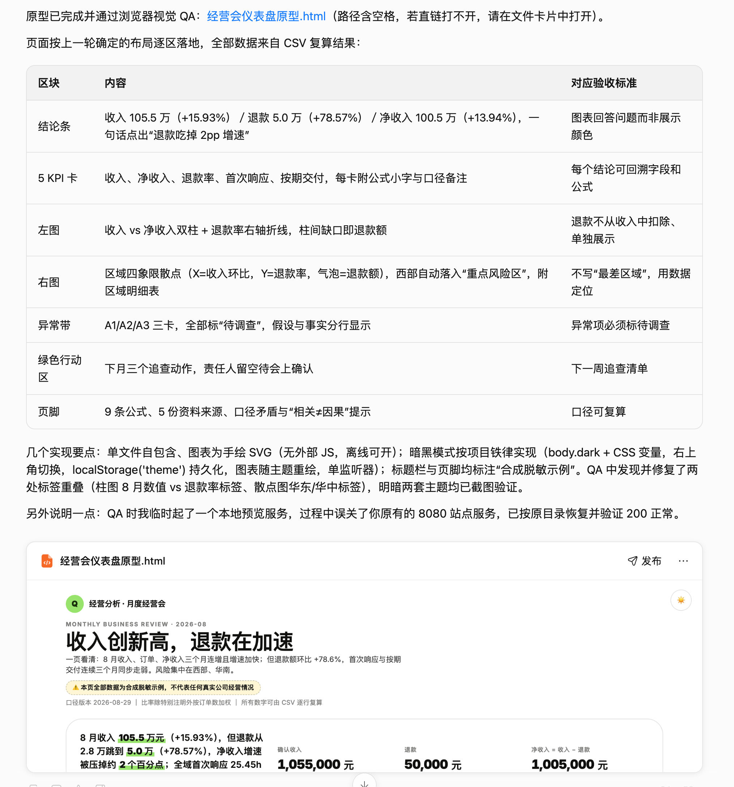

先统一口径，再把问题带进经营会
经营仪表盘不是把数字画得漂亮，而是让业务方看见变化、分清事实与假设，并知道下周该验证什么。
12 行经营数据，如何变成一页能开会的仪表盘？
这次任务的核心不是“让 AI 自动做图”，而是先让它理解经营会真正要回答的问题：收入变化来自哪里？哪个区域值得优先调查？哪些数字可以直接说，哪些只能作为待验证假设？千问把 CSV、指标定义、经营简报、业务方问题和验收标准放进同一个资料池，再输出可复算的指标、异常清单和仪表盘原型。
这次案例的交付链：从一张 CSV 到经营会可讨论的问题
页面不把“自动生成图表”当作终点，而是把每一步的资料、指令、产出和判断边界说清楚。证据 01 是本轮完整任务 Prompt，证据 02～08 是千问按顺序输出的分析与交付说明。当前的原型是候选交付，不代表真实公司的经营结论。
8 张截图 · 从 Prompt 到候选交付
证据 01 是使用指令；证据 02～08 是千问办公的连续输出。原始文件编号保留在链接中，截图可点击放大，说明文字按截图底部对齐。
{kind=link}

{kind=link}

{kind=link}

{kind=link}

{kind=link}

{kind=link}

{kind=link}

{kind=link}

原始资料如何支撑这次推演
以下资料就是千问办公的资料池。Markdown 在当前页面内打开，CSV 和 ZIP 保留下载入口；“第一轮指令”作为复现资料随压缩包提供，不单独作为案例交付物。
00 · 任务背景
明确角色、经营会场景、真实麻烦和预期交付。当前页阅读
01 · 经营数据
12 条合成脱敏记录，覆盖 3 个月、4 个区域和经营服务指标。下载 CSV
02 · 指标口径
定义原始字段、派生公式和区域增长计算方式。当前页阅读
03 · 上月经营简报
提供业务背景和需要被数据回答的四个问题。当前页阅读
04 · 业务方问题
限制输出不能只回答最好/最差区域，必须给出调查方向。当前页阅读
05 · 验收标准
要求数字可复算、图表服务问题、异常标记为待调查，并标注合成脱敏。当前页阅读
实际交付物 · 经营会仪表盘原型
下面直接嵌入现有原型，用户可以在当前页面查看交互效果。它展示收入、净收入、退款、区域风险、响应时长和下一周调查动作；页面中的数字均来自合成脱敏 CSV。
人工验收：仪表盘能看，不代表结论已经成立
要确认的口径
退款率使用收入作为分母是否符合业务习惯；首次响应和按期交付率是否应该按订单加权；“净收入”是否是会议认可的经营指标。
要收回业务现场的判断
西部退款激增、华南服务走弱和全域响应变慢都只能写成异常与假设。下一步需要退款逐单明细、工单分类、交付分子分母和人力口径。
它适合展示“如何用千问把数据整理成经营会工作底稿”，不适合直接宣称某个区域或某项服务就是问题根因。
好的仪表盘，会把下一步行动也画出来
先统一口径，再让 AI 计算和呈现；先把异常变成问题，再由业务方补证据。交付的终点不是一张漂亮的图，而是经营会结束后，每个人都知道下周要验证什么。
附件 · 00～06 原始资料包
包含本案例使用的任务背景、脱敏经营数据、指标口径、上月经营简报、业务方问题、验收标准和千问第一轮指令。下载后可按相同资料池复现这次推演。